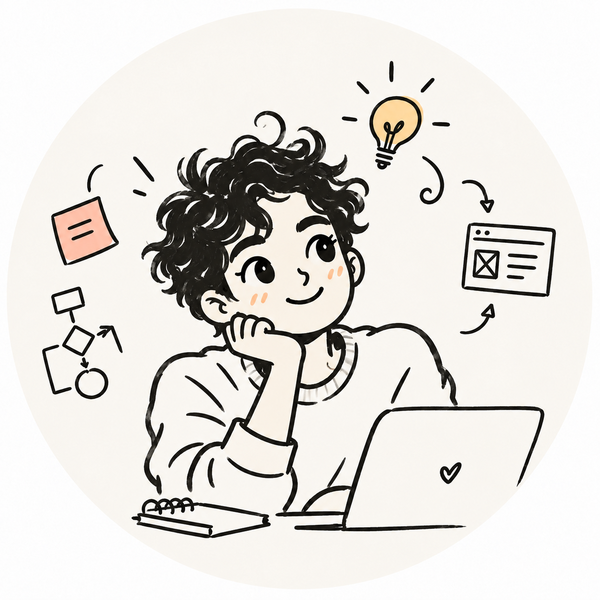

AI PRODUCT WORKFLOW
PM Copilot Workbench
把产品想法和用户反馈，沿证据链整理成功能建议、PRD、原型说明与交付任务。
真实界面截图 · 点击体验隔离演示 ↗

把产品想法和用户反馈，沿证据链整理成功能建议、PRD、原型说明与交付任务。
真实界面截图 · 点击体验隔离演示 ↗
用五类工程任务比较三款模型，通过固定验收与盲评，观察它们真正交付出的结果。
15 / 15 单元计分 · Kimi 本轮领先 3.80 / 500；截图仅展示界面。
查看项目详情
一组会随视角变化的互动卡片。用 Blender、Three.js 与网页分层效果，让光、电与冰晶呈现不同的空间感。
点击体验 · 进入卡片检视
半成品、个人尝试，和暂时没有继续做下去的小实验。
从海面小船出发，点击渔夫抛竿，再滚动潜入 0–80 米水下，观察海龟、月亮水母、翻车鱼与大青鲨，并查看生物百科。
查看 GitHub 源码
持续开发中的 MVP · 当前仅覆盖海面至 80 米
基于 OpenFreebuds 做设备适配，验证了 FreeBuds 7i 的设备识别及左耳、右耳、充电盒电量读取。
打开项目仓库
让 Switch Pro 手柄以虚拟 Xbox 360 手柄的方式被 Windows 游戏识别。支持按键映射、独立扳机与可调摇杆死区。
在 GitHub 查看项目
本地实验 · 实机游戏验证待完成
探索苏州、杭州、南京、成都和北京的五条插画路线。切换城市，在地图故事里查看站点与行程灵感。
体验 Demo
示意路线 · 非实时导航
把分散在不同 AI Agent 中的 Skills 放到同一处：发现、查看和管理，再经过预检安全同步。它只在本地运行。
点击查看简介
扫描本机的 AI Agent 与已安装 Skills。
查看 Skill 的描述、来源与文件。
先做预检，再安全同步到选定的 Agent。
这是本地工具的介绍；此处暂不提供在线运行或下载。
从完整文章提炼视觉关键词，确认方向后制作 4–6 张透明贴纸，装饰正文两侧。
悬停或点按 · 贴纸落位
01、02 可打开全文；其余 3 篇仍是 Mock 预览，暂不跳转。
![]()